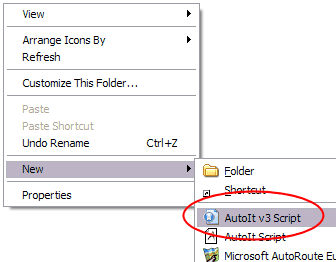
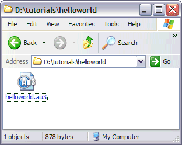
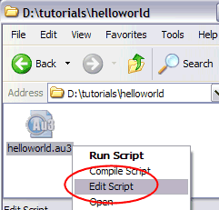
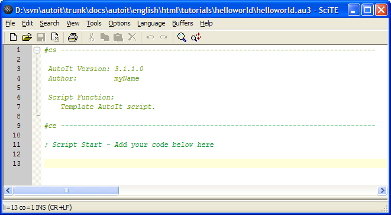
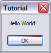
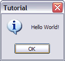

This tutorial explains the basics of creating an AutoIt script and running it. The tutorial assumes that you have already fully installed AutoIt v3 using the supplied installer.
First open a folder where you wish to create the script. Right-click in the folder and select New / AutoIt v3 Script.

A new file will be created, immediately allowing you to rename it to something more appropriate. Change 'New AutoIt v3 Script' to 'helloworld', leaving the '.au3' in the name intact if it is visible.

Now we have created the script file we want to edit it to make it do something useful. Right-click on helloworld.au3 and select Edit Script.

The SciTE editor will open and you will see something like this:

The code you see is simply some comments that you can use to organise your scripts. The lines that start with a semi-colon ; and are treated as comments (ignored). ; is similar to the REM statement in a DOS batch file.
Now we want to tell AutoIt to display a message box - this is done with the MsgBox function.
At the bottom of the file type the following:
MsgBox(0, "Tutorial", "Hello World!")
All functions take parameters, MsgBox takes three - a flag, a title and a message. The flag is a number that changes the way MsgBox displays - we will use 0 for now. The title and message are both string parameters - when using strings in AutoIt surround the text in double or single quotes. "This is some text" or 'This is some text' - both will work fine.
Now save the script and close the editor. You've just written your very first AutoIt script! To run the script simply double-click the helloworld.au3 file (you may also right-click the file and select Run Script) .
You should see this:

Now, let's look at the flag parameter for the MsgBox function again. From the manual page we can see various values listed which change the way MsgBox displays. The value of 0 simply shows a simple message box with an OK button. A value of 64 displays the message box with an information icon.
Edit the script again and change the 0 to 64 so you have:
MsgBox(64, "Tutorial", "Hello World!")
Run the script and you will see:

Experiment with the various flag values to see what kind of results you can get. Remember, if you want to use more than one flag value then simply add the required values together.